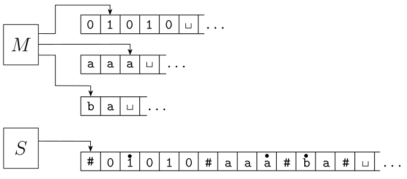

Turing Machines
Multi-tape Turing Machines
Modify the single tape turing machine by adding another tape. This is the same as a single TM, but we can work with multiple strings

Say we have the following three strings:
\(01q_1011\)
\(000q_1\)
\(q_11010\)
These can be flattened into one TM:
\( 01q_1011\# 000q_1\# q_11010 \)
If we shift the string down by one to denote the left-hand-side of the string, we can make a TM that moves back and forth between the different strings.
\( $01q_1011\# 000q_1\# q_11010 \)
Add to \(\Gamma, \dot{\Sigma}\) all symbols of the input alphabet with \(\dot{}\) above it, \(\#\), and \(\dot{\#}\)
S = "On input \(w = w_1, w_2,...,w_n\)
- \(\#\dot{w_1}w_2...w_n\#\dot{-}\#\dot{-}\#...\#\)
- Move right, read symbols under each tape head
- Second pass, move left, update tapes according to M's transition function
- If TM encounters \(\dot{\#}\), then it reached an unread blank portion of the tape. It writes a blank, and shifts all the content right of \(\dot{\#}\) to the right
So, we can emulate multiple tapes with a single-tape TM. However, we have a time cost. If our string has max length n, moving back and forth along the tape to update positions take up to n times as many steps.
Non-Deterministic Turing Machines
We can also have non-deterministic turing machines, where there are multiple possible arrows out of a state. We accept if any choice leads to the accepting state.

\( q_0 $01x \rightarrow $q_101x \rightarrow $xq_21x \rightarrow $xyq_3x \)
From here, we have two choices to follow:
\($xyxq_1 \rightarrow \) reject
\($xyxq_2 \rightarrow \) accept
We can simulate a non-deterministic TM by performing a breadth-first search on the configuration tree using multi-tape TMs

input tape contains the unaltered input
simulation tape simulates some branch of the NTM
address tape tells us what branch we're on
Start at the root, follow the first child, second child, third child,...
- Initially, tape 2, 3 empty, 1 contains input \(w\)
- Copy 1 to 2, initialize string on 3 to be \(\epsilon\)
- Simulate n on 2, consult 3 for next branch to follow
If branch invalid, go to 4 (also if reject)
Elseif no tape 3 symbol, go to 4 - Replace tape 3 string with next string in ordering
Simulate next branch by going to 2
So, we can simulate a NDTM with a TM. Similarly, there is a time cost. The size of the tree can be exponentially large in height, so doing a BFS on a configuration tree of an NTM can take exponentially longer than the running time of the NTM.
RAM model
In the RAM model, each tape cell has an address, we can jump to any address during computation, and can read memory addresses from the tape to figure out where to jump. Gives us a regular computer's architecture!
There is a \(n^6\) slowdown however, where n is the length of the string
Church-Turing Thesis
As we can see, each of the modified turing machines can be simulated with a single tape TM. So, they all have the same expressive power.
Anything that we can reasonably expect to do with an algorithm can also be decided using a TM:
Problems that can be solved using algorithms \(\leftrightarrow\) Problems that can be solved using TMs
We can now look at things that TMs can't do, and by this thesis, if a TM can't do it, then no algorithm can.
The Liar's Paradox
A statement of the form "This statement is false."
If we can encode this paradox into a program under assumption that a problem is decidable, we can show that there is some flaw in our code, and therefore a flaw in our assumption.
Decidability
Decidable: A problem that can be solve by a TM or algorithm is decidable.
Recognizable: A problem is recognizable if we can build a TM that will accept exactly the set of its yes-instances, and loop on some of its no-instances.
Co-recognizable: A problem is co-recognizable if we can recognize all of the no-instances, and loop on some of its yes-instances. We can prove co-recognizability by writing a recognizer for the complement of the language a problem accepts.